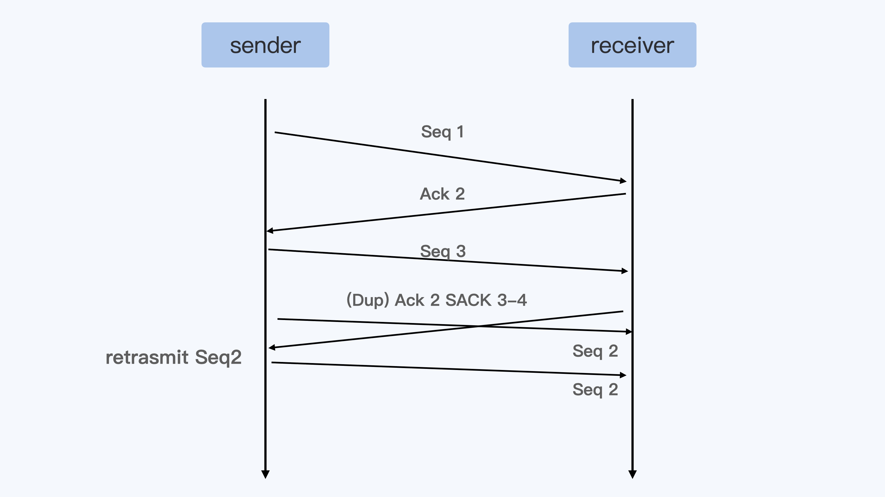
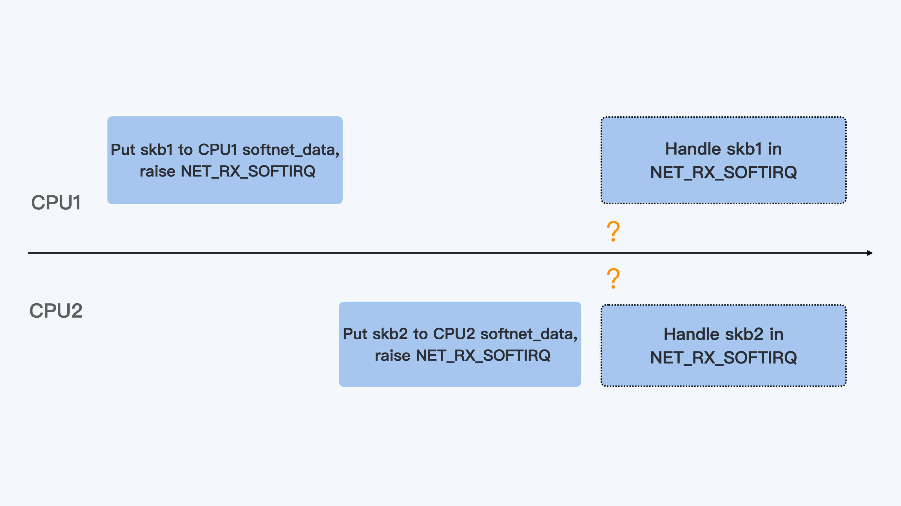

- 00 开篇词 一个态度两个步骤，成为容器实战高手.md.html
- 01 认识容器：容器的基本操作和实现原理.md.html
- 02 理解进程（1）：为什么我在容器中不能kill 1号进程？.md.html
- 03 理解进程（2）：为什么我的容器里有这么多僵尸进程？.md.html
- 04 理解进程（3）：为什么我在容器中的进程被强制杀死了？.md.html
- 05 容器CPU（1）：怎么限制容器的CPU使用？.md.html
- 06 容器CPU（2）：如何正确地拿到容器CPU的开销？.md.html
- 07 Load Average：加了CPU Cgroup限制，为什么我的容器还是很慢？.md.html
- 08 容器内存：我的容器为什么被杀了？.md.html
- 09 Page Cache：为什么我的容器内存使用量总是在临界点.md.html
- 10 Swap：容器可以使用Swap空间吗？.md.html
- 11 容器文件系统：我在容器中读写文件怎么变慢了？.md.html
- 12 容器文件Quota：容器为什么把宿主机的磁盘写满了？.md.html
- 13 容器磁盘限速：我的容器里磁盘读写为什么不稳定_.md.html
- 14 容器中的内存与IO：容器写文件的延时为什么波动很大？.md.html
- 15 容器网络：我修改了_proc_sys_net下的参数，为什么在容器中不起效？.md.html
- 16 容器网络配置（1）：容器网络不通了要怎么调试.md.html
- 17 容器网络配置（2）：容器网络延时要比宿主机上的高吗.md.html
- 18 容器网络配置（3）：容器中的网络乱序包怎么这么高？.md.html
- 19 容器安全（1）：我的容器真的需要privileged权限吗.md.html
- 20 容器安全（2）：在容器中，我不以root用户来运行程序可以吗？.md.html
- 加餐01 案例分析：怎么解决海量IPVS规则带来的网络延时抖动问题？.md.html
- 加餐02 理解perf：怎么用perf聚焦热点函数？.md.html
- 加餐03 理解ftrace（1）：怎么应用ftrace查看长延时内核函数？.md.html
- 加餐04 理解ftrace（2）：怎么理解ftrace背后的技术tracepoint和kprobe？.md.html
- 加餐05 eBPF：怎么更加深入地查看内核中的函数？.md.html
- 加餐06 BCC：入门eBPF的前端工具.md.html
- 结束语 跳出舒适区，突破思考的惰性.md.html
- 捐赠
18 容器网络配置（3）：容器中的网络乱序包怎么这么高？
你好，我是程远。这一讲，我们来聊一下容器中发包乱序的问题。
这个问题也同样来自于工作实践，我们的用户把他们的应用程序从物理机迁移到容器之后，从网络监控中发现，容器中数据包的重传的数量要比在物理机里高了不少。
在网络的前面几讲里，我们已经知道了容器网络缺省的接口是veth，veth接口都是成对使用的。容器通过veth接口向外发送数据，首先需要从veth的一个接口发送给跟它成对的另一个接口。
那么这种接口会不会引起更多的网络重传呢？如果会引起重传，原因是什么，我们又要如何解决呢？接下来我们就带着这三个问题开始今天的学习。
问题重现
我们可以在容器里运行一下 iperf3 命令，向容器外部发送一下数据，从iperf3的输出”Retr”列里，我们可以看到有多少重传的数据包。
比如下面的例子里，我们可以看到有162个重传的数据包。
# iperf3 -c 192.168.147.51
Connecting to host 192.168.147.51, port 5201
[ 5] local 192.168.225.12 port 51700 connected to 192.168.147.51 port 5201
[ ID] Interval Transfer Bitrate Retr Cwnd
[ 5] 0.00-1.00 sec 1001 MBytes 8.40 Gbits/sec 162 192 KBytes
…
- - - - - - - - - - - - - - - - - - - - - - - - -
[ ID] Interval Transfer Bitrate Retr
[ 5] 0.00-10.00 sec 9.85 GBytes 8.46 Gbits/sec 162 sender
[ 5] 0.00-10.04 sec 9.85 GBytes 8.42 Gbits/sec receiver
iperf Done.
网络中发生了数据包的重传，有可能是数据包在网络中丢了，也有可能是数据包乱序导致的。那么，我们怎么来判断到底是哪一种情况引起的重传呢？
最直接的方法就是用tcpdump去抓包，不过对于大流量的网络，用tcpdump抓包瞬间就会有几个GB的数据。可是这样做的话，带来的额外系统开销比较大，特别是在生产环境中这个方法也不太好用。
所以这里我们有一个简单的方法，那就是运行netstat命令来查看协议栈中的丢包和重传的情况。比如说，在运行上面的iperf3命令前后，我们都在容器的Network Namespace里运行一下netstat看看重传的情况。
我们会发现，一共发生了162次（604-442）快速重传（fast retransmits），这个数值和iperf3中的Retr列里的数值是一样的。
-bash-4.2# nsenter -t 51598 -n netstat -s | grep retran
454 segments retransmited
442 fast retransmits
-bash-4.2# nsenter -t 51598 -n netstat -s | grep retran
616 segments retransmited
604 fast retransmits
问题分析
快速重传（fast retransmit）
在刚才的问题重现里，我们运行netstat命令后，统计了快速重传的次数。那什么是快速重传（fast retransmit）呢？这里我给你解释一下。
我们都知道TCP协议里，发送端（sender）向接受端（receiver）发送一个数据包，接受端（receiver）都回应ACK。如果超过一个协议栈规定的时间（RTO），发送端没有收到ACK包，那么发送端就会重传（Retransmit）数据包，就像下面的示意图一样。

不过呢，这样等待一个超时之后再重传数据，对于实际应用来说太慢了，所以TCP协议又定义了快速重传 （fast retransmit）的概念。它的基本定义是这样的：如果发送端收到3个重复的ACK，那么发送端就可以立刻重新发送ACK对应的下一个数据包。
就像下面示意图里描述的那样，接受端没有收到Seq 2这个包，但是收到了Seq 3–5的数据包，那么接收端在回应Ack的时候，Ack的数值只能是2。这是因为按顺序来说收到Seq 1的包之后，后面Seq 2一直没有到，所以接收端就只能一直发送Ack 2。
那么当发送端收到3个重复的Ack 2后，就可以马上重新发送 Seq 2这个数据包了，而不用再等到重传超时之后了。

虽然TCP快速重传的标准定义是需要收到3个重复的Ack，不过你会发现在Linux中常常收到一个Dup Ack（重复的Ack）后，就马上重传数据了。这是什么原因呢？
这里先需要提到 SACK 这个概念，SACK也就是选择性确认（Selective Acknowledgement）。其实跟普通的ACK相比呢，SACK会把接收端收到的所有包的序列信息，都反馈给发送端。
你看看下面这张图，就能明白这是什么意思了。

那有了SACK，对于发送端来说，在收到SACK之后就已经知道接收端收到了哪些数据，没有收到哪些数据。
在Linux内核中会有个判断（你可以看看下面的这个函数），大概意思是这样的：如果在接收端收到的数据和还没有收到的数据之间，两者数据量差得太大的话（超过了reordering*mss_cache），也可以马上重传数据。
这里你需要注意一下，这里的数据量差是根据bytes来计算的，而不是按照包的数目来计算的，所以你会看到即使只收到一个SACK，Linux也可以重发数据包。
static bool tcp_force_fast_retransmit(struct sock *sk)
{
struct tcp_sock *tp = tcp_sk(sk);
return after(tcp_highest_sack_seq(tp),
tp->snd_una + tp->reordering * tp->mss_cache);
}
好了，了解了快速重传的概念之后，我们再来看看，如果netstat中有大量的”fast retransmits”意味着什么？
如果你再用netstat查看”reordering”，就可以看到大量的SACK发现的乱序包。
-bash-4.2# nsenter -t 51598 -n netstat -s | grep reordering
Detected reordering 501067 times using SACK
其实在云平台的这种网络环境里，网络包乱序+SACK之后，产生的数据包重传的量要远远高于网络丢包引起的重传。
比如说像下面这张图里展示的这样，Seq 2与Seq 3这两个包如果乱序的话，那么就会引起Seq 2的立刻重传。

Veth接口的数据包的发送
现在我们知道了网络包乱序会造成数据包的重传，接着我们再来看看容器的veth接口配置有没有可能会引起数据包的乱序。
在上一讲里，我们讲过通过veth接口从容器向外发送数据包，会触发peer veth设备去接收数据包，这个接收的过程就是一个网络的softirq的处理过程。
在触发softirq之前，veth接口会模拟硬件接收数据的过程，通过enqueue_to_backlog()函数把数据包放到某个CPU对应的数据包队列里（softnet_data）。
static int netif_rx_internal(struct sk_buff *skb)
{
int ret;
net_timestamp_check(netdev_tstamp_prequeue, skb);
trace_netif_rx(skb);
#ifdef CONFIG_RPS
if (static_branch_unlikely(&rps_needed)) {
struct rps_dev_flow voidflow, *rflow = &voidflow;
int cpu;
preempt_disable();
rcu_read_lock();
cpu = get_rps_cpu(skb->dev, skb, &rflow);
if (cpu < 0)
cpu = smp_processor_id();
ret = enqueue_to_backlog(skb, cpu, &rflow->last_qtail);
rcu_read_unlock();
preempt_enable();
} else
#endif
{
unsigned int qtail;
ret = enqueue_to_backlog(skb, get_cpu(), &qtail);
put_cpu();
}
return ret;
}
从上面的代码，我们可以看到，在缺省的状况下（也就是没有RPS的情况下），enqueue_to_backlog()把数据包放到了“当前运行的CPU”（get_cpu()）对应的数据队列中。如果是从容器里通过veth对外发送数据包，那么这个“当前运行的CPU”就是容器中发送数据的进程所在的CPU。
对于多核的系统，这个发送数据的进程可以在多个CPU上切换运行。进程在不同的CPU上把数据放入队列并且raise softirq之后，因为每个CPU上处理softirq是个异步操作，所以两个CPU network softirq handler处理这个进程的数据包时，处理的先后顺序并不能保证。
所以，veth对的这种发送数据方式增加了容器向外发送数据出现乱序的几率。

RSS和RPS
那么对于veth接口的这种发包方式，有办法减少一下乱序的几率吗？
其实，我们在上面netif_rx_internal()那段代码中，有一段在”#ifdef CONFIG_RPS”中的代码。
我们看到这段代码中在调用enqueue_to_backlog()的时候，传入的CPU并不是当前运行的CPU，而是通过get_rps_cpu()得到的CPU，那么这会有什么不同呢？这里的RPS又是什么意思呢？
要解释RPS呢，需要先看一下RSS，这个RSS不是我们之前说的内存RSS，而是和网卡硬件相关的一个概念，它是Receive Side Scaling的缩写。
现在的网卡性能越来越强劲了，从原来一条RX队列扩展到了N条RX队列，而网卡的硬件中断也从一个硬件中断，变成了每条RX队列都会有一个硬件中断。
每个硬件中断可以由一个CPU来处理，那么对于多核的系统，多个CPU可以并行的接收网络包，这样就大大地提高了系统的网络数据的处理能力.
同时，在网卡硬件中，可以根据数据包的4元组或者5元组信息来保证同一个数据流，比如一个TCP流的数据始终在一个RX队列中，这样也能保证同一流不会出现乱序的情况。
下面这张图，大致描述了一下RSS是怎么工作的。

RSS的实现在网卡硬件和驱动里面，而RPS（Receive Packet Steering）其实就是在软件层面实现类似的功能。它主要实现的代码框架就在上面的netif_rx_internal()代码里，原理也不难。
就像下面的这张示意图里描述的这样：在硬件中断后，CPU2收到了数据包，再一次对数据包计算一次四元组的hash值，得到这个数据包与CPU1的映射关系。接着会把这个数据包放到CPU1对应的softnet_data数据队列中，同时向CPU1发送一个IPI的中断信号。
这样一来，后面CPU1就会继续按照Netowrk softirq的方式来处理这个数据包了。
RSS和RPS的目的都是把数据包分散到更多的CPU上进行处理，使得系统有更强的网络包处理能力。在把数据包分散到各个CPU时，保证了同一个数据流在一个CPU上，这样就可以减少包的乱序。
明白了RPS的概念之后，我们再回头来看veth对外发送数据时候，在enqueue_to_backlog()的时候选择CPU的问题。显然，如果对应的veth接口上打开了RPS的配置以后，那么对于同一个数据流，就可以始终选择同一个CPU了。
其实我们打开RPS的方法挺简单的，只要去/sys目录下，在网络接口设备接收队列中修改队列里的rps_cpus的值，这样就可以了。rps_cpus是一个16进制的数，每个bit代表一个CPU。
比如说，我们在一个12CPU的节点上，想让host上的veth接口在所有的12个CPU上，都可以通过RPS重新分配数据包。那么就可以执行下面这段命令：
# cat /sys/devices/virtual/net/veth57703b6/queues/rx-0/rps_cpus
000
# echo fff > /sys/devices/virtual/net/veth57703b6/queues/rx-0/rps_cpus
# cat /sys/devices/virtual/net/veth57703b6/queues/rx-0/rps_cpus
fff
重点小结
好了，今天的内容讲完了，我们做个总结。我们今天讨论的是容器中网络包乱序引起重传的问题。
由于在容器平台中看到大部分的重传是快速重传（fast retransmits），我们先梳理了什么是快速重传。快速重传的基本定义是：如果发送端收到3个重复的ACK，那么发送端就可以立刻重新发送ACK对应的下一个数据包，而不用等待发送超时。
不过我们在Linux系统上还会看到发送端收到一个重复的ACK就快速重传的，这是因为Linux下对SACK做了一个特别的判断之后，就可以立刻重传数据包。
我们再对容器云平台中的快速重传做分析，就会发现这些重传大部分是由包的乱序触发的。
通过对容器veth网络接口进一步研究，我们知道它可能会增加数据包乱序的几率。同时在这个分析过程中，我们也看到了Linux网络RPS的特性。
RPS和RSS的作用类似，都是把数据包分散到更多的CPU上进行处理，使得系统有更强的网络包处理能力。它们的区别是RSS工作在网卡的硬件层，而RPS工作在Linux内核的软件层。
在把数据包分散到各个CPU时，RPS保证了同一个数据流是在一个CPU上的，这样就可以有效减少包的乱序。那么我们可以把RPS的这个特性配置到veth网络接口上，来减少数据包乱序的几率。
不过，我这里还要说明的是，RPS的配置还是会带来额外的系统开销，在某些网络环境中会引起softirq CPU使用率的增大。那接口要不要打开RPS呢？这个问题你需要根据实际情况来做个权衡。
同时你还要注意，TCP的乱序包，并不一定都会产生数据包的重传。想要减少网络数据包的重传，我们还可以考虑协议栈中其他参数的设置，比如/proc/sys/net/ipv4/tcp_reordering。
思考题
在这一讲中，我们提到了Linux内核中的tcp_force_fast_retransmit()函数。那么你可以想想看，这个函数中的tp->recording和内核参数 /proc/sys/net/ipv4/tcp_reordering是什么关系？它们对数据包的重传会带来什么影响？
static bool tcp_force_fast_retransmit(struct sock *sk)
{
struct tcp_sock *tp = tcp_sk(sk);
return after(tcp_highest_sack_seq(tp),
tp->snd_una + tp->reordering * tp->mss_cache);
}
欢迎你在留言区分享你的思考或疑问。如果学完这一讲让你有所收获，也欢迎转发给你的同事、或者朋友，一起交流探讨。
© 2019 - 2023 Liangliang Lee. Powered by gin and hexo-theme-book.